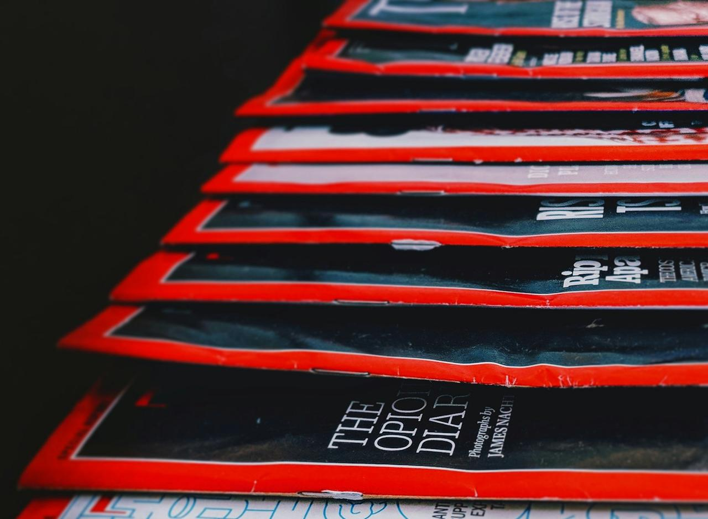
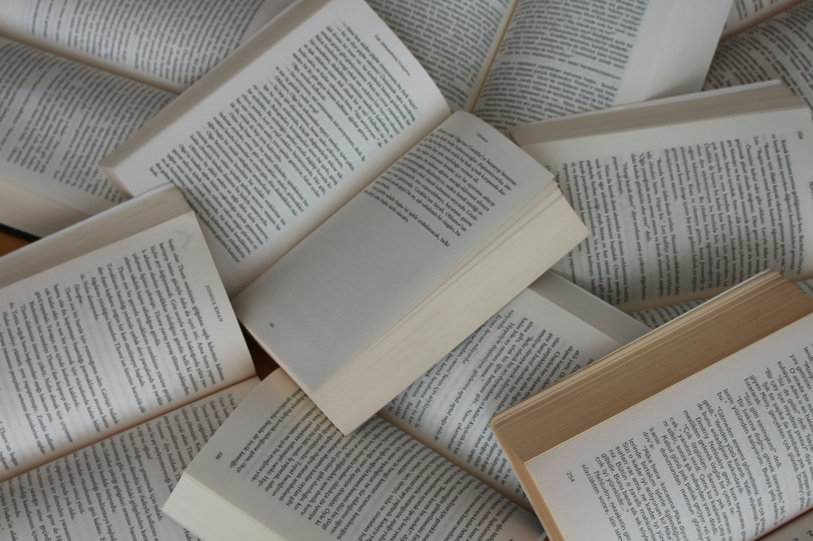

The HOW of World Building
By Goden Hwang
Literary arts are not the simple act of reading and writing. It’s an act of storytelling, where students learn to organize their thoughts, question the status quo, and gain insight into experiences that may otherwise remain invisible. Literature trains students to wrestle with complex issues in the world and perspectives that may differ from their own personal views. In this way, literary arts create empathetic global citizens who are empowered to make a difference in the lives of others. Education is often evaluated through standardized metrics; however, exposure to literary arts sets success on a different metric: one that is defined through qualitative aspects, such as one’s character, rather than quantitative metrics.



By Goden Hwang
By Dharshwana Muralidharan

By Haritha
By Nelly

By Phoebe
By Emily
By Goden Hwang
By Phoebe
By Goden Hwang
Now obviously this is not the only type of worldbuilding; everything I talked about here is “hard worldbuilding” because everything has a reason and consistency. Soft worldbuilding is what I like to call “feeling”. It's a lot more akin to fairy tales because it's very thematic and focused on emotions, mood, and atmosphere. I actively dislike soft worldbuilding, so I don’t do it, nor do I know enough about it to teach it, so my lesson is gonna focus on hard worldbuilding.
Simply put, there is no singular way to worldbuild. I don’t even worldbuild the same way for every story I write. I’m gonna use the world of Rizanor because that is my excerpt. Of course, if you want to know different styles of writing, that is also a future possibility. This worldbuilding strategy is called “growing a seed,” and it's exactly what it sounds like. Growing a seed is where you take a specific, small, or single detail and expand everything out from that one “seed”. For Rizanor, the first idea that started the whole thing was that I wanted a character that could funnel the power of stars dotted in the sky to gain practically unlimited power. That led to the idea of linking, which directly led to the creation of the “threads of reality” that make up the core theme of my power system of Resonance. The creation of this power system led me to imagine how it would shape society, which created the different nations that inhabit my world. The idea that certain threads of reality were stronger than others led to my creating “living threads,” which were the godlike beings of my story. It's a real cause-and-effect situation that all grew from a single detail about my world. This type of worldbuilding is useful to try at least once because it really helps make the world you build feel more organic and natural. Cause and effect, logical continuity, is one of the biggest things I value in worldbuilding. If something happened, then why? Has the world previously hinted or established this as a possibility?
In worldbuilding, one good way to check if it has been done properly is asking this question: “Does my world create new stories on its own?” What this means is that if the world doesn't really work for a new hypothetical story, it is lacking. The world should be alive, and in an alive environment, activity should be happening even without the main story. An example of a good world creating its own stories is the Star Wars galaxy. The Star Wars universe already has a very established history, but it still manages to create new stories. The Mandalorian TV series was created completely independently of the main story of the original trilogy. This obviously also serves the value that if you ever wish to return to this world, a new story can just as easily be created.
By Dharshwana Muralidharan
In modern education it is not unknown that science, technology, engineering, and mathematics are promulgated as subjects that are required to ensure a bright future, while the literary arts are often considered as a secondary enrichment. Creative writing, drama, poetry, and literary analysis is often considered as pastimes that are to be enjoyed in one’s down time, and often considered less practical than subjects with direct applications. However, as a staunch advocate for the inclusion of arts in education, I advocate that reading and writing is imperative to foster critical thinking, emotional intelligence, and communication, especially in a world that has become increasingly reliant on technology and artificial intelligence.
Students are often under a lot of pressure academically and under mental health stress, so they are not only resources that help them process the tumultuous process of growing up. Writing is a thoroughly internal process that helps students manage and regulate the large emotions they face as adolescents, and equips them with habits that allow them to process large changes, even as adults, in a responsible and healthy manner. Through personal narratives, fiction, poetry, students are given the opportunity to learn about themselves. Writing gives students the opportunity to really see their emotions visibly on the page, and gives them time to try to understand why they feel the way they feel, and gives them time to reflect on their lives.
Through character development students are encouraged to learn more about others and the large world around them. When students begin to develop characters that are different from themselves, they begin to practice empathy, a powerful trait that will serve them well in real-life situations as well. By stepping into the shoes of a protagonist facing unfamiliar struggles, students learn to explore contrasting perspectives, and begin to choose open-mindedness over their own biases. The beauty of literature is that it simply does not observe another human being, but opens up individuals to their unique values, beliefs, hopes, and dreams.
This capacity for deep empathy is why literary arts shouldn’t be viewed as secondary to STEM. We live in an era where artificial intelligence can synthesize vast amounts of data and generate code in seconds, and thus it is the skills that are only unique to humans, such as empathy, which become valuable.
Integrating the literary arts into education also helps enhance communication. At school, students are often taught to create writing that is simply persuasive or around a central theme, inhibiting their inherent creativity. However, by integrating literary arts into education, schools could help students harness their creativity into creating compelling works of literature, and by learning to write in different perspectives and tones, students can understand who to write in a method where they anticipate how diverse audiences might understand their writing, and adjust their voice, register, and style depending on what type of work they are working on. Literary arts often require complex plot construction, this can teach students to think sequentially, ensuring their arguments flow logically from the beginning to the conclusion with imagery and pacing, allowing them to capture and retain their audience’s attention whether they are writing a science fiction novella or in a boardroom pitching their business.
Ultimately, the debate between the literary arts and STEM should not be considered a struggle with only one victor, rather it is imperative that schools see how literary arts can teach students empathy and communication skills, that can assist them in their future endeavors, whether it be in the field of arts or not. In a world where technical skills are increasingly becoming redundant, it is critical to hone the critical human abilities of empathy and communication in order to prepare students for the world.
By Haritha
Haritha is a writer who loves to write and believes there is something so liberating in letting words carry what is felt. From childhood, she has always been fascinated by how a bunch of words placed in a particular order could bring so much life into them. For her, poems are tiny windows that let her see the world through a gentle lens. She feels words could touch the untouched parts of humans in a way that feels like companionship rather than an intrusion. She always wanted to become someone whose words could make readers feel that they aren't alone in this world and also feel something they haven't named yet. She loves the wonder and melancholy literature brings. She thinks the arts give people a place to be more connected with themselves and understand others just as they are. Among the arts, writing and literature gave her a sanctuary, a voice to share feelings that haven't been experienced yet. She believes that art as a part of education helps develop empathy and gives people the bandwidth to expand their world.
I am having the
Most stupid grin on
Just because of a
Simple question he asked
"Why do you always
Call me by name ?
How about a nickname ?
Why just my name ?"
I tried answering him
But I had no words
What I know is
I love his name
Now, I am sitting
And thinking of answer
I didn't get anything
Except a stupid grin
Can't it be simple ?
He calls me by
Everything but my name
And I love it
But when I think
Of something for him
His name feels right
I can't explain it
He feels that it's
So ordinary and direct
Yet it's the most
Beautiful thing for me
I get his concern
But how do I explain
The comfort it brings
The sense of belonging
Every one uses it
But does it hold
The tenderness I give
The affinity I hold
Every words he uses
To address me dearly
Are nothing close to
His name, I love
Could he understand this?
It is not jealous
I don't know what's this
I don't think it's envy
I don't hate her too
I don't feel jealous at-all
It just consumes me completely
There is this horrible ache
Making it impossible to breathe
Not letting me hold tears
This feel hits, not when
You bring her beautiful flowers
You take her pretty places
You tell her she's gorgeous
Those moments look really good
I don't feel bad seeing
I see my friend being
Happy with his girl, genuinely
But, to be really honest
There are these few moments
That takes my heart out
And crushes it down awfully
The way he sees her
The gentleness in his voice
The tender way of leading
The sincerity in listening her
More than all these moments
The fact that, my friend
Is in love with someone
Just hits me with pain
The reality of him being
Taken away forever from me
Makes me pause my life
Wondering what's the point, anymore
I ain't jealous or envious
I am just feeling a
Heart wrenching realisation of my
Dream fading into oblivion, forever
I forget things which
Pained me so badly
Not because I could
But I couldn't share
Only my shadow stood
I told her everything
That weighed on my heart
That burnt me down
But now I wonder
Does she remember everything
I could not ask
And she can't answer
But, did she really listen ?
I don't believe in
Love at first sight
Not just because it
Doesn't have the gradual
Realisation of falling in
But its also because
I won't be loved
The way they do
In a love that
Bloomed at first sight
It takes much time
To see me and
Understand what I am
Below all those hideousness
Before falling for me
Although it isn't something
Certain, it may or
May not happen at-all
It's upto the one
Who is sitting beside
But I just hope
That someone chooses to
Sit with me and
See me for real
And fall for me
This sounds like begging
When I am stating
Something I wish happens
I am not desperate
For someone to love
It is simply that
I have so much
To give to someone
But I am really
Afraid to begin with
So I wish this,
A guy befriends me
Falls for me, naturally
Confesses, chooses to stay
Lives seeing me love
Love drives our lives
Makes us go crazy
Brings serenity to mind
Helps us invent happiness
Things that are done
Out of love and
In love are beautiful
In the silliest way
Waking little early, so
I could catch him
Sleeping calmly beside me
For a good-day start
Watching him go on
About his favorite game
Becoming more about success
Than being about passion
Trying to surprise him
By coming home earlier
But end-up being welcomed
By his delicious cooking
Gathering little flowers in
His favorite blue color
To see him amazed
And hide little moisture
Everything around me reminds
How they could bring
Happiness and meaning to
The man I love
Oh,
Late nights he spends
With me watching movies
Only I love, because
He wants to stay
By Nelly
By Nelly Nelly Reckinger is a rising junior at the ALR-High School in Luxembourg. She pursues a STEM-track at high school. She plans on studying medicine. Since childhood, she has loved to write and to read, initially mostly in German and French. Then, she learned English two years ago and fell in love with poetry and literature. She enjoys playing sports, watching comedic movies, hanging out with friends and dancing in the rain. This poem is inspired by the protagonist Starr’s code-switching from the book The hate u give by Angie Thomas. Mimicry A scientific term describing adaptations animals use to merge with their surroundings This includes us, the human race The only difference is: Octopuses and insects have one environment to blend into— water or land Humans carry multiple versions of themselves, pressed into one body, one brain Our complexity is always praised, rarely questioned I wonder why Every second: new emotions Riding a dopamine high Hair messy, clothes thrown together One second, a radiant smile The other, a heartbreaking sob The notebook is packed. The list is complete. My hair is tied back. My clothes are monochrome. A polite smile stays on my face, not reaching my eyes. What the fuck? I love you. That would be great. Would you mind if I…? Now I understand why simplicity dies why complexity thrives Different places demand different skins Places where politeness is required Places where it’s not enough to be yourself Places where you are too much Places where you can truly be yourself So many places, one personality is an equation that doesn’t make sense So you adapt in order to survive Batesian mimicry Müllerian mimicry Methods to prevent being eaten But you want to be eaten You want to attract the flies Without them, you starve Stomach growling for love This poem is inspired by the feeling of having to shrink down to accommodate others. Haunted house I open the door. A ghost’s breath makes me shiver. I enter. It’s silent, dead quiet. I climb the stairs. One step creaks. I freeze. A ghostly “shhh” scolds me. My heart beats. My hands tremble, cold as the grave. My voice falters. I ask, “Hello?” I listen to the silence. No response— not even a sound. Another presence lingers— not human, not alive. Deep in my bones, I know there is somebody. Alone? Not alone. Seen or unseen? That’s the question. I may not be alone, but in this haunted house, I am sure as hell unseen. I shrink myself not to bother anyone. No yelling. No laughing. No running. Maybe this hidden creature is a ghost, created by behavior, nourished by habit, a parasite in my head. Maybe I am the ghost. This poem is inspired by the ride on the Staten Island ferry and the way the waves crashed against the boat. Mother and child The waves, playing with the ship’s patience, devour with a child’s greed the ship’s outline. The ship, with her motherly discipline, wraps on the knuckles of his cocky offspring. Ashamed, the waves shy away. White and foamy their excuse. Cleverer than before, the waves retire to the coast, visiting their long forgotten aunt. The land welcomes them, brings them seashells and wood. After a while, the aunt says “Your mom will miss you.” The child protests fervently, crying itself to sleep in secret. After a little space, the two happily reunite, the mother longing for her beloved child. She embraces it feverishly. The waves, happily returned in motherly protection, recover their vivid spark. Playing and toying with the patience until the ship says “Stop it!” The waves retrieve and apologize “ We will learn from our mistakes” This poem is inspired by subway-stories and is written from the perspective of the train. Not Naive Rattling through this dusty tub, shrill and fast, the moaning wheels let sparks flare up. Exhausted from their tedious journey, they cry their horror out loud. Rotten rats are mingled with foulish fish. A few drops of golden rain drip from the graffiti-covered walls. The abyss of human souls being their daily business, The wheels put light-proof blindfolds on. having seen the worst and more, their minds paint images exceeding the reality by their ingenuity of unscrupulousness of the mortal minds. With time, threads dissolve. The mask becomes see-through. The workers blink rapidly. Pupils decrease in the ashy irises. Wheels take in their environment, eyes darting rapidly around. A man, spilling this blood on the glutted concrete, yells “But I loved you!” A woman, towering over him, knife in one hand, loveletter in the other, rages “ I thought so too!” The wheels avert their gaze. looking for new material for their blindfold. “I knew it!” triumphs one wheel. “ You knew it!” acknowledge the others. A child loses his teddy bear. It enters the subway, crying. A witness captures the scene. The victim finds his way back. This poem is inspired by the atmosphere and a wooden table in the poet's house. Fossils of life Surrounded by books. Some new, some antique. I revel in the smell of dust. Knowledge and creativity linger in these wooden shelves. Low whispers replace ambitious silence. The trees outside swing in the wind, Their leaves rustle conspiratorily. My thoughts run away without direction. A thud on the wooden table, cold and unforgiving under my finger. Amber made of viscous honey, enwraps insects. Prove of a distant era. Brilliant in the sun, opaque in the shadow, I try to scratch beneath the surface. How did they die? Did they suffer? Did they drown in the suffocating resin? Did they gasp for fresh air? This bee looks frightened, She saw it coming. Was she paralyzed by fear? Did she remember the last sweet nectar from the peony? This centipede curled up. Did he accept his fate? Did he imagine the safe arms of his mother facing death? This dragonfly spreads her wings. Where was her safe harbor? Did the resin weigh down her frail and delicate fairywings? The thuds stop. I look up, I look down. The amber disappeared. Where home is I sit on the bench, I hold coffee in one hand, I have a croissant in the other. The sun shines in my face. My skin heats up. My thoughts stop. My pulse slows down. The birds are chirping, some shriller, some deeper. A red-wattled lapwing asks, “Did we do it?” Or is it an anvil? Deer run through the bushes. Birds fly up, getting out of the way. The sun goes down. The glow worms come out, lighting the way. I stand up, slowly. I wiggle my toes. I need to get home before it gets dark.
By Phoebe
Phoebe Woo is a rising senior from Media, Pennsylvania. Her work often centers around themes of love, family, and the sweeter details of life. Phoebe has been writing for as long as she can remember, and she believes that the arts are the strongest tools of empathy and connection between people. When she’s not writing, you can find her spending time with friends in the nearest coffee shop.
This short piece was inspired by a bench plaque on the Brooklyn Promenade.
I write,
adorn me with your touch, and
fill me with your sacred spell, until
everything fades but
this shared tableau.
unravel me and
recognize
a testament to the years spent
tracing you
in every corner of my skin.
I extend myself past the breaking of my bones,
if only to hold you
light in this endless labyrinth of time
only my hands, love, are here to feel your warmth;
unite us now,
I sing,
I have found reason.
I have known desire.
the stories we’ve woven from
my hymns, your papyrus
etch two more lovers into stone.
if I may be remembered, it will be
by your side
in every lifetime,
knowing no paradise but this.
I lift myself from murky futures,
as dimmer worlds crumble without your
that has scrubbed all my color bare.
only my eyes, love, remain to hold your gaze.
fuse our sparking souls into one,
and carve us into eternity.
By Clara
Hi! My name is Clara and I am a 16 year old living in Los Angeles. I love writing prose and poetry! Here are a couple of my pieces. Like a release I pretend to have read Vonnegut. There, in the spirit of the only good writing is the brutally honest kind, is my confession. Fake laughter fake laughter fake laughter. Toxins staying in. There is no setup. The punchline is the jumpscare waiting to happen. I’m trying I’m trying so hard I promise. Suzan-Lori Parks said laughter is like throwing up, like a release. I feel like throwing up when I try so hard to laugh. Fake laughter fake laughter fake laughter. I sneeze and remain unblessed. I am not the best and quite possibly the worst. But I think it’s good to be bad at this. If I have to trade a poem for a piece of truth I’ll do it. I’ll give every word away. Careful applause, given because it has to be. I run. The problem is that the more you like yourself the less funny you are. You don’t have a hunger and you don’t have a reason. I don’t consider myself very funny but I do hate myself and I think it helps. Is this maxim true? It is not. However, I really think it might be. Two truths are always true and in fact the minimum number. Maxim is a word I’ve been pretending to know a lot lately. I use it almost every day. I’m trying I’m trying I’m trying so hard. There is nothing but dead silence and fake laughter. I don’t know who the fuck Suzan Lori-Parks is or who she thinks she is to be able to tell me how throwing up feels. And yesterday I pretended to have read Vonnegut again. Last-name basis. I called his book only Slaughterhouse. I think it worked. It is 11:11, and now it is 11:12, and I don’t know what I want or believe in, except for real laughter. Fake laughter fake laughter fake laughter. ——— bleeding hot sweat Bleeding hot sweat East Village and I’m scared. I went on a walk next to the Hudson River but there was construction. So I guess I went on a walk by a construction site. Chemicals loud noises bright yellow cars black and white photos. Dark from white, blur, shift. I took a nap. I ate a pancake. Sticky sweet silence. Nauseous enough to be tired. Anticipation redhot enough to burn. Maybe I shouldn’t ruminate. Wondering in the dark how movies end. Everyone is tired and no one will nap. No one will talk about it. Everyone is faking this.
By Emily
Emily Appleyard is a speculative fiction author living in the New York metropolitan area who loves to write character-driven stories and hopes to one day complete a full length-novel. Creative writing is the vessel through which she has learned to unpack and explore the various facets of our world, but most importantly, writing and engaging with other creatives is what makes her life so much brighter. Excerpt: The lighting cast by the hanging fixtures bathed the church in a warm glow, a welcome respite from the harsh brightness of the outside world. It washed the two flags, one for America, one for Arkansas, out; their lurid blues and reds softened and restrained as if they had been bleached by the furious summer sun. In this place, God took precedence over all else. State loyalty, proud patriotism, and familial love—it all played second fiddle to Him. Those emotions existed ancillary to God, a means through which a faithful Christian could brush up against Him, could get as close as He would allow. Adina ran her hands over her skirt, absentmindedly pushing the pleats between the gaps of her fingers. The cotton brushed against her skin, and a peculiar sense of satisfaction washed over her. She bit her tongue to prevent a smile from slipping onto her face. She was in no mood to call upon Pastor Dawson’s attention, her eyes bleary and voice wobbly after two nights of tossing and turning under her floral covers. The pastor’s sermon barreled on, his harsh voice ricocheting off the wooden walls. His words were staccato, and he paused at the end of every sentence, daring a dissenter to shout him down. He searched for persecution in the eyes of his congregation, the one place he would never, could never find it. The outside world, of course, was a different story. “Why doesn’t Eliza come to church?” Adina, still small enough to need a cushion on her chair, asked her sister. All the kids in her homeschool Co-Op went to church at least once a week, if not more. All the kids except Eliza. Sarah, her older sister, was standing behind her, gingerly weaving lily white ribbons into her golden hair. Her sister’s touch was gentle and light, but the Dutch braids she had learned from the other girls at Bible camp were immaculate. “Her parents are Catholic, so they go to a Catholic church.” “Oh.” Adina frowned. “They should come to our church.” Her stomach squeezed sharply, imagining Eliza, who always shared her glitter pens with her, being turned away at the pearly gates, her name absent from the saint’s list. “Well, Mama got Eliza’s mom to come to her Bible study, so it shouldn’t be long before she joins us," her sister said, patting Adina’s head reassuringly. “But what if she doesn’t?” “She will,” Sarah said, tying a neat bow at the end of Adina’s braid. “But what if she doesn’t?” Her sister had no reply. Adina jolted upright. She pinched the skin on the back of her hand, and prayed that Pastor Dawson had not noticed her slipping into her daydreams. Mama glanced at her, thin lips pursed in consideration. Adina hastily shook her head and fixed her gaze on the pulpit. “If the devil can sink his claws into you once, and convince you to ignore the wound, then the infection of evil will slowly kill you and rot your soul beyond salvation,” Pastor Dawson lectured, spit flying from his maw. “Because of this, God requires us to be constantly on guard against the temptations of the world. It is the most righteous that Satan hounds, desperate to steal the shepherds from the sheep." “Amen!” A greying woman shouted from the front row. Dread wafted off her, enduring and devoted; devoted to her husband, her high school sweetheart, her first and last love. He’s a smart man, smarter than any man in this town ought to be, but he’s dumb about God. Pushing back being born again—can’t he see they’re getting old? The heaviness lifted from Adina’s eyelids, and her heart enthusiastically began to pump blood, waking her spindly limbs from their lethargy. Something slithered across her hindbrain and down her spine, something inborn and tortuously familiar. Something that missed dense grass and rolling hills, the scent of salt and iron in the air, a boyish laugh and a nudging shoulder… Adina steeled her mind against the onslaught of foreign terror and the confused sensations it unleashed. I am not my thoughts, I am not my thoughts; she resisted her lifelong affliction, her sixth sense that smelt fear like a scent hound, and her voracious spirit that lapped it up like sweet tea on a hot summer’s day. Her jaw quivered. I am not my thoughts. This phrase, this litany, provided her scant comfort. After all, what comfort could prayer bring a rotten soul?
By Goden Hwang
The following article will explicate my story’s power system, emphasizing how characters receive and use the powers that they are given. This is for the fantasy novel I am currently writing about. Resonance is the name of the power system. Resonance is defined by how integrated a being is with the world of Rizanor. Rizanor is not a coherent, single whole, but is instead a yarnball of threads that are tangible manifestations of different aspects of reality. Almost every single living and non-living thing has resonance in varying degrees for every single thread of reality. Now, certain individuals have what is called "Resonant Manifestation," which is where one becomes Resonant enough with a specific thread of reality to be able to exert influence over that thread. Resonant Manifestations result in what are traditionally called "superpowers". Those who do not manifest resonance are still resonant, but for those who don't manifest it is called "Resonant Latency". Those with Resonant Latency are mostly anyone who is "good" at something. A master chef has Resonant Latency with the threads of reality of cooking or food, and the same is true for musicians, painters, blacksmiths, soldiers, and everyone else. Obviously, manifestation and latency are not mutually exclusive, an individual with resonant manifestation can also have resonant latency with that same thread or a different one. Furthermore, a person can be resonant to multiple threads of reality, but it's less common than resonance with a single thread. Because almost everything has a thread of reality (in varying degrees of power and influence), a person can be resonant with almost anything. Among these countless threads of reality, which one you become resonant with depends almost entirely on the person. The individual's goals, personality, likes, dislikes, experiences, knowledge, and countless other things all culminate into resonance. Because resonance is dependent on the individual, resonance can change if the person undergoes change. But this is not common; someone must truly experience a substantial new experience, or undergo major change.
By Phoebe
Phoebe Woo is a rising senior from Media, Pennsylvania. Her work often centers around themes of love, family, and the sweeter details of life. Phoebe has been writing for as long as she can remember, and she believes that the arts are the strongest tools of empathy and connection between people. When she’s not writing, you can find her spending time with friends in the nearest coffee shop. This short piece was inspired by a bench plaque on the Brooklyn Promenade. In Loving Memory of Nancy Litwin Not long ago you were a daughter, neighbor, student, friend. Only two years have passed since you last blinked the sleep from your eyes, inhaled the dew of a dawning city that knew you, loved you, and now remembers you. Somewhere someone carries you in their jacket pocket, wearing your tattered handkerchief until it bores new holes where fingers should be. Somewhere someone else reads your name for the first time. Now you sprawl across the better half of Brooklyn, polished silver amid a tangle of wood and rust. You’re flanked by fellow dedications to friends and children and lovers, all remembered, all loved. You’re in good company. Side-by-side you sit, an ensemble of legacies New York has left behind, and take in the blooming world. Up ahead is a jogger with neon orange sneakers, sweating to outstrip his latest pace. A little behind him walks an elderly man, tapping his cane to a rhythm only he can hear and smiling faintly at the view. There’s a polite bubble of laughter; a tour group has just passed. If you listen closely enough, you can make out a mother, father, daughter, and son, who speak in a slightly slower cadence from their chipper guide. All around, footsteps overlap and overtake one another, drumming a rippling beat as the city thunders on. Perhaps it’s familiar to you, cupping a stranger’s weary back, offering a moment of relief and release from the sweltering heat. After all, this is how someone chose to immortalize you, engulfing your name in their gratitude like a bee in resin. Perhaps they thought it fitting, to gift you an eternal skyline that claims you as one of its own. Now every passing stranger will love, and remember, you too. Overhead, the air is ablaze with a guttural hum, marking the flight of a different sort of bird. These creatures breathe gas and fuel, with steel for wings and engines for bellies that groan their arrival at every stage. Fat white bullets streak latticed paths across the sky, mirroring the steady migration of ships below. Can you hear the notes of nature’s birds, just beneath the clamor? They sing a softer tune, but even this is proof of the great continuation. Metal and feathers coexist in one long pathway, and so do you. This poem was inspired by the Pair Statue of Nebsen and Nebet-ta in the Brooklyn Museum. Phoebe Woo is a rising senior from Media, Pennsylvania. Her work often centers around themes of love, family, and the sweeter details of life. Phoebe has been writing for as long as she can remember, and she believes that the arts are the strongest tools of empathy and connection between people. When she’s not writing, you can find her spending time with friends in the nearest coffee shop. This poem was inspired by the Pair Statue of Nebsen and Nebet-ta in the Brooklyn Museum.